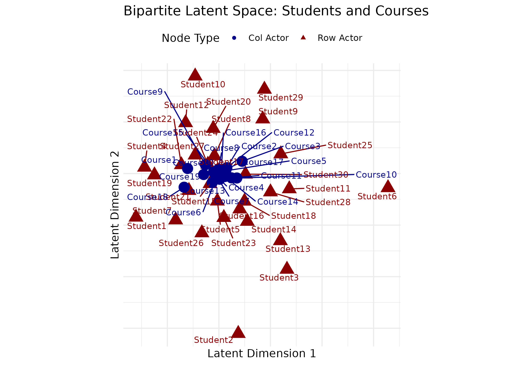
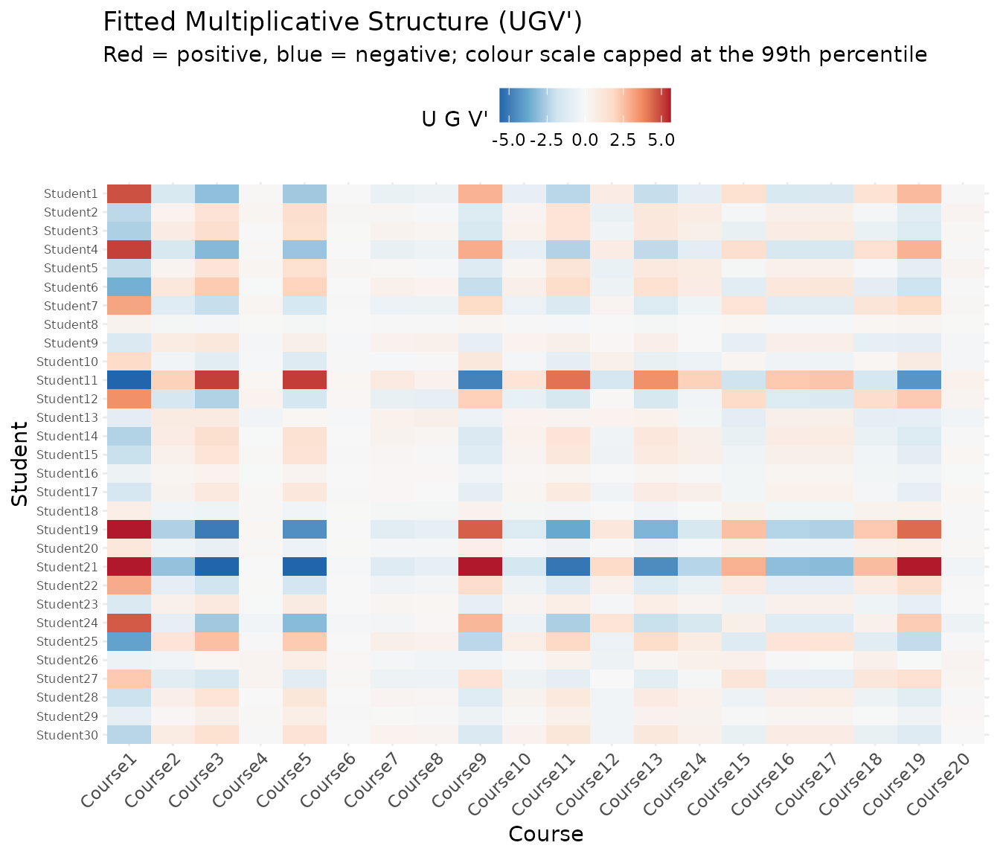
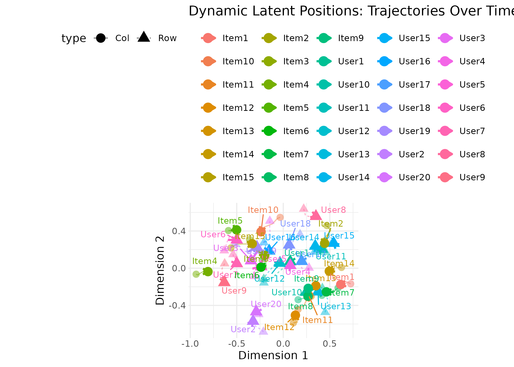
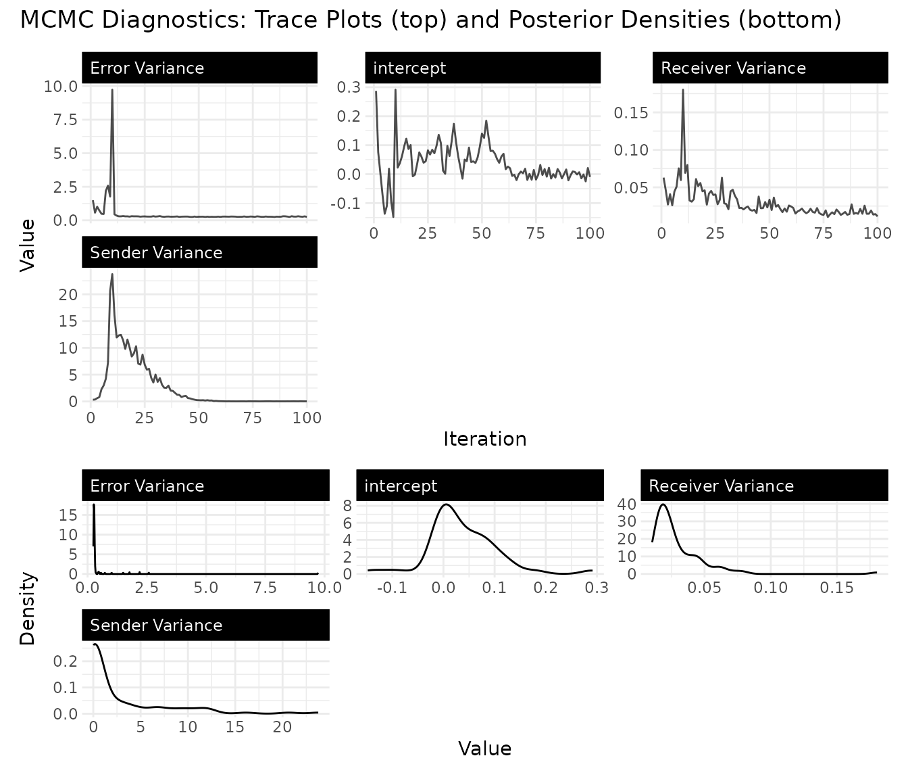
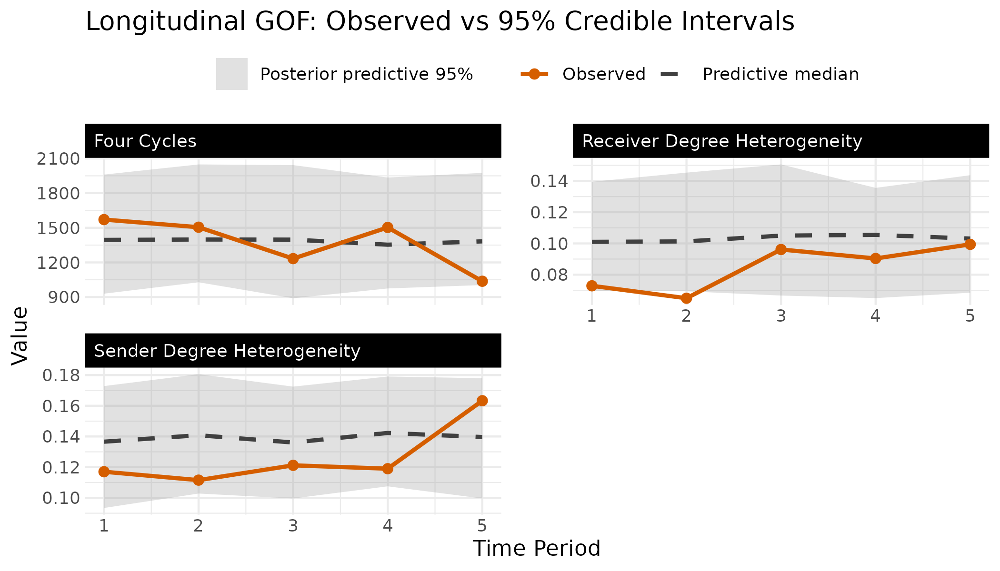
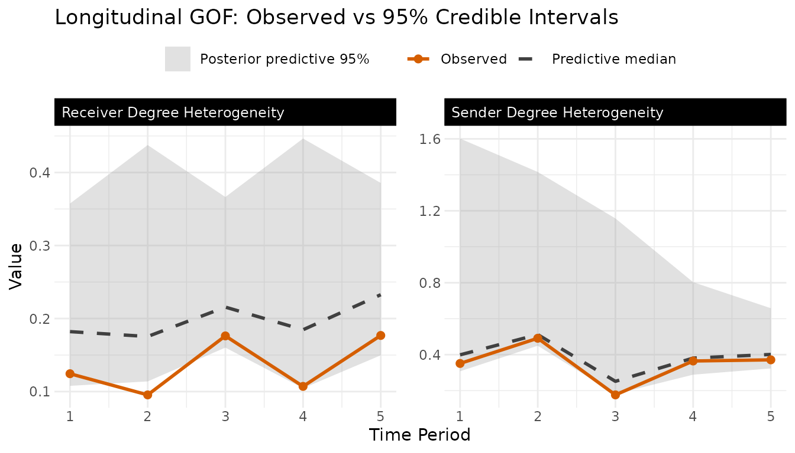
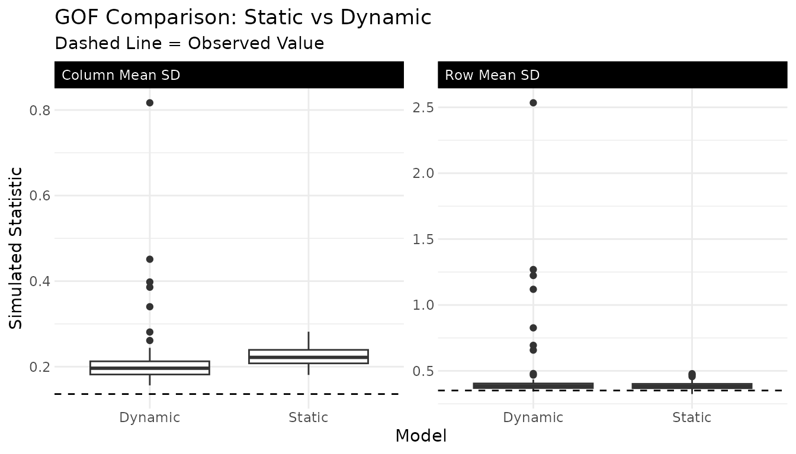
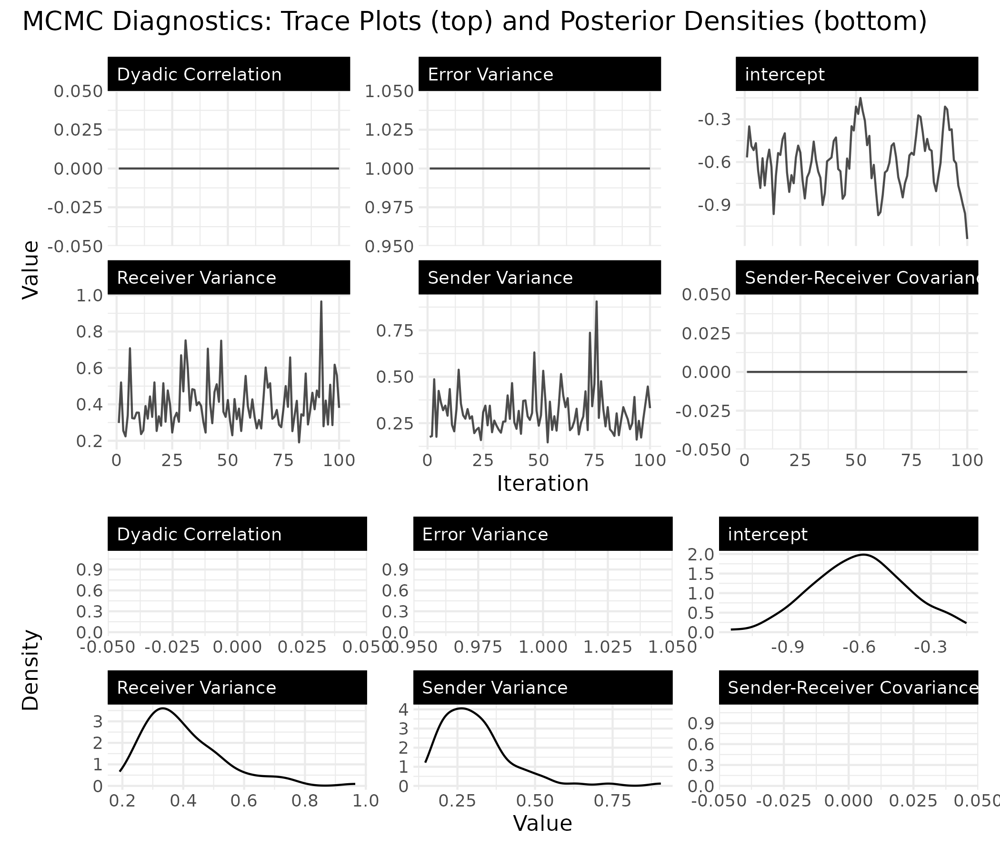

Bipartite Network Analysis
Cassy Dorff, Shahryar Minhas, and Tosin Salau
2026-05-29
Source:vignettes/bipartite.Rmd
bipartite.RmdIntroduction
Not all networks are created equal. Many real-world networks are bipartite, meaning they have two distinct types of nodes, and ties only form between types, never within them. Students enroll in courses. Countries sign treaties. Legislators join committees. Users purchase products. In each case, the adjacency matrix is rectangular rather than square, and the row and column nodes play fundamentally different roles.
The lame package supports bipartite networks through
both ame() (cross-sectional) and lame()
(longitudinal). The key difference from the unipartite case is that the
model uses separate latent spaces for the two node types, connected by
an interaction matrix
that captures how row-node and column-node characteristics relate to
each other.
The Bipartite AME Model
In a bipartite network, the probability of a tie between row node and column node is modeled as:
The additive effects work just as in the unipartite case: captures how “active” row node is (e.g., a student who takes many courses), and captures how “popular” column node is (e.g., a course with high enrollment). But the multiplicative term is different from the unipartite . Row and column nodes live in potentially different-dimensional latent spaces ( and ), and is a interaction matrix.
How is handled differs between the cross-sectional and longitudinal entry points:
- In
ame()(cross-sectional bipartite), is initialised to a rank-truncated scaled identity and held fixed during MCMC. The rotation and scaling of the interaction are absorbed into and , so itself is not estimated; what is identified is the overall multiplicative term . - In
lame()(longitudinal bipartite), is sampled each iteration from its conditional Gaussian via the bipartite -sampler. Withdynamic_G = FALSEa single is shared across periods; withdynamic_G = TRUEa separate is drawn per period and returned asfit$G_cube(see the section ondynamic_Gbelow).
In either case, the bipartite parameterisation lets row-side latent positions (, shape ) and column-side latent positions (, shape ) be chosen at different ranks, which is the substantive flexibility users get.
A few things drop away in the bipartite setting. There is no dyadic correlation parameter , because ties are inherently directional from row to column nodes (you can’t have a reciprocal tie in a student–course network). The additive effects and also have independent variances rather than a joint covariance, since they describe fundamentally different types of actors.
Supported families in bipartite mode
Every family that works for a square network also works for a
rectangular one. The rectangular Z-samplers live in
R/rZ_bipartite.R and treat each cell as independent given
the linear predictor (there is no reciprocal-cell coupling in a
bipartite graph). The supported set:
| Family | Bipartite supported? | Notes |
|---|---|---|
normal |
yes | the unrestricted-Gaussian baseline. |
binary |
yes | probit link on tie / no-tie. |
tobit |
yes | left-censored continuous outcome. |
ordinal |
yes | rectangular ordinal-probit sampler (rZ_ord_bip_fc); use
data-induced cutpoints (default) or pass
ordinal_cutpoints = "explicit" for the Cowles MH variant on
the unipartite path. |
cbin |
yes | constrained-binary with odmax interpreted as the
per-row outdegree cap. |
frn |
yes | fixed-rank-nominations; each row’s top-odmax ranks are
observed. |
rrl |
yes | row-ranked likelihood ranks each row over column nodes; scales
linearly in the row length, so long rows (nB = 50 or
larger) are routine. |
poisson |
yes | rectangular MH on Z; supports the period_exposure
offset on the longitudinal path. |
The same table applies to lame() in bipartite mode.
dynamic_G = TRUE is supported in lame(); it
runs a Carter-Kohn FFBS on vec(G_t) under an AR(1)
state-space prior and returns the posterior-mean per-period
G_t plus a rotation-drift diagnostic that flags when
apparent time variation is dominated by latent-rotation drift rather
than real change. We demonstrate dynamic_G later in this
vignette.
Tobit and rrl in practice
Bipartite tobit is the right choice when your
outcome is a continuous quantity that is censored at a known boundary,
such as trade volume between a country and an IGO that records “no
exchange” as zero rather than as missing, or a patient’s reported dose
of a drug they were not prescribed (also zero). The Z-sampler treats
observed zeros as left-censored draws from the underlying latent
intensity and propagates that censoring into the additive /
multiplicative updates. Set family = "tobit" and supply the
matrix of recorded values (zeros allowed).
Bipartite rrl (row-ranked likelihood) is first-class
in both ame() and lame(): the rectangular
Z-sampler rZ_rrl_bip_fc in R/rZ_bipartite.R
enforces the per-row rank cone (Y_ij > Y_ik implies
Z_ij > Z_ik within row i) without a zero
threshold and without odmax. The sampler scales linearly in
the row length, so long rows (nB = 50 or larger) are
routine.
Cross-Sectional Analysis with ame()
Coming from a long-format tibble?
If your data lives in a long-format tibble (patient_id,
drug, prescribed), pivot it to a matrix once
before calling ame():
library(tidyr); library(tibble)
Y_df <- rx %>% # long tibble
pivot_wider(names_from = drug, values_from = prescribed)
Y <- as.matrix(Y_df[, -1]) # numeric matrix
rownames(Y) <- Y_df$patient_id # row actor names
# colnames(Y) are already the drug names from pivot_widerThe matrix is what ame(..., mode = "bipartite")
consumes. Rownames / colnames carry through to fit$APM (one
number per patient) and fit$BPM (one number per drug)
downstream.
Simulating Data
To illustrate the workflow, we simulate a bipartite network of 30 students and 20 courses. Each student has a 2-dimensional latent position that captures their academic preferences, and each course has a 2-dimensional latent position that captures what kind of student it attracts. The interaction matrix determines how these latent dimensions combine to predict enrollment.
# simulate a student-course enrollment network
n_students <- 30
n_courses <- 20
# true latent positions (unobserved in practice)
U_true <- matrix(rnorm(n_students * 2, 0, 0.8), n_students, 2)
V_true <- matrix(rnorm(n_courses * 2, 0, 0.8), n_courses, 2)
# interaction matrix: dimension 1 has positive affinity,
# dimension 2 has negative (students high on dim 2 avoid courses high on dim 2)
G_true <- matrix(c(1, 0.5, 0.5, -1), 2, 2)
# generate enrollment probabilities and binary outcomes
# negative intercept keeps enrollment rate realistic (~25-30%)
eta <- -0.8 + U_true %*% G_true %*% t(V_true)
prob <- pnorm(eta)
Y_bipartite <- matrix(rbinom(n_students * n_courses, 1, prob),
n_students, n_courses)
rownames(Y_bipartite) <- paste0("Student", 1:n_students)
colnames(Y_bipartite) <- paste0("Course", 1:n_courses)
cat("Network dimensions:", dim(Y_bipartite), "\n")
#> Network dimensions: 30 20
cat("Enrollment rate:", round(mean(Y_bipartite), 2), "\n")
#> Enrollment rate: 0.29Fitting the Model
Fitting a bipartite model requires setting
mode = "bipartite" and specifying the latent dimensions for
each node type separately via R_row and
R_col.
# note: burn/nscan are kept small here for fast vignette building.
# for real analyses, use burn >= 1000 and nscan >= 5000.
fit_cross <- ame(
Y = Y_bipartite,
mode = "bipartite",
R_row = 2, # latent dimensions for students
R_col = 2, # latent dimensions for courses
family = "binary",
burn = 100,
nscan = 500,
odens = 5,
verbose = FALSE
)
summary(fit_cross)
#>
#> === AME Model Summary ===
#>
#> Call:
#> [1] "Y ~ a[i] + b[j] + U[i,1:2] %*% G %*% V[j,1:2]', family = 'binary'"
#>
#> Regression coefficients:
#> ------------------------
#> Estimate StdError z_value p_value CI_lower CI_upper
#> intercept -0.597 0.195 -3.062 0.002 -0.963 -0.221 **
#> ---
#> Signif. codes: 0 '***' 0.001 '**' 0.01 '*' 0.05 '.' 0.1 ' ' 1
#> Note: stars are a visual hint from posterior mean / SD only; for inference use the credible intervals.
#>
#> Variance components:
#> -------------------
#> Estimate StdError
#> va 0.309 0.120
#> cab 0.000 0.000
#> vb 0.401 0.135
#> ve 1.000 0.000
#> rho 0.000 0.000
#> (va = sender, cab = sender-receiver covariance, vb = receiver,
#> rho = dyadic correlation, ve = residual variance)
#> Note: bipartite model (rho fixed to 0, cab fixed to 0)The summary shows the regression coefficient (just an intercept here,
since we included no covariates) and the variance components. The fitted
object also stores the student latent positions (U), course
latent positions (V), the (fixed) interaction matrix
(G), and additive effects (APM for student
activity, BPM for course popularity), which we’ll visualize
next.
Visualizing the Latent Space
The uv_plot function with layout = "biplot"
places both row and column nodes in the same latent space, making it
easy to see which students cluster near which courses. Students and
courses that appear close together in this plot have a higher predicted
probability of a tie.

The interaction matrix
mediates how the latent dimensions of students and courses combine to
predict ties. In ame() (the
cross-sectional path used in this fit)
is held fixed at a rank-truncated scaled identity: the
rotation and scaling of the interaction are absorbed into
and
,
so
itself is not estimated and its entries carry no information. What
is estimated is the overall multiplicative term
,
which captures the latent structure of the network. (In
lame()
is sampled rather than fixed; see the next section.) We visualise the
fitted latent structure
directly:
G_mult <- fit_cross$U %*% fit_cross$G %*% t(fit_cross$V)
G_df <- data.frame(
Student = rownames(G_mult)[row(G_mult)],
Course = colnames(G_mult)[col(G_mult)],
Fitted = as.vector(G_mult)
)
# RdBu reversed (direction = -1): positive => red, negative => blue,
# zero => white. By default scale_fill_distiller() centres white at the
# midpoint of the DATA range, not at zero -- so we pass symmetric limits
# c(-mx, mx) to force the white midpoint onto zero, which is the right
# choice for a signed effect. RdBu is colour-blind-safe per ColorBrewer's
# protanopia / deuteranopia checks.
mx <- max(abs(G_df$Fitted), na.rm = TRUE)
ggplot(G_df, aes(x = Course, y = Student, fill = Fitted)) +
geom_tile() +
scale_fill_distiller(palette = "RdBu", direction = -1, limits = c(-mx, mx)) +
labs(title = "Fitted Multiplicative Structure (UGV')",
subtitle = "Red = positive latent affinity, Blue = negative, near-white = ~0",
x = "Course", y = "Student",
fill = "U G V'") +
theme_bw() +
theme(panel.border = element_blank())
Longitudinal Analysis with lame()
When bipartite networks are observed over multiple time periods (say,
student enrollments across semesters, or country–treaty memberships
across decades), lame() lets you pool information across
time while optionally allowing the latent structure to evolve.
Simulating Longitudinal Data
We simulate a panel of user–item interaction networks over 5 periods
in which the latent positions drift via an AR(1) process with
.
This is a smooth, mean-reverting evolution: each period’s latent
position is mostly the previous one plus a small innovation. The
simulation chunk below uses the stationary-variance
parameterisation
(
with
,
so the marginal variance of
stays equal to 1 for every
).
The MCMC sampler internally uses the innovation-variance
parameterisation
(
with
);
the two are the same process when
,
but the variance lives on different objects, so don’t mix them when
writing your own simulations. The data-generating interaction matrix
that combines
and
is held constant across periods, so when we fit lame() with
dynamic_G = FALSE the model’s static
is matched to the truth; we show the time-varying alternative
(dynamic_G = TRUE) further down.
n_periods <- 5
n_users <- 20
n_items <- 15
true_rho <- 0.9
G_long <- matrix(c(1, 0.3, 0.3, -0.8), 2, 2)
U_t <- vector("list", n_periods)
V_t <- vector("list", n_periods)
U_t[[1]] <- matrix(rnorm(n_users * 2), n_users, 2)
V_t[[1]] <- matrix(rnorm(n_items * 2), n_items, 2)
for(t in 2:n_periods) {
U_t[[t]] <- true_rho * U_t[[t-1]] +
sqrt(1 - true_rho^2) * matrix(rnorm(n_users * 2), n_users, 2)
V_t[[t]] <- true_rho * V_t[[t-1]] +
sqrt(1 - true_rho^2) * matrix(rnorm(n_items * 2), n_items, 2)
}
Y_list <- list()
for(t in 1:n_periods) {
eta_t <- U_t[[t]] %*% G_long %*% t(V_t[[t]])
prob_t <- pnorm(eta_t)
Y_list[[t]] <- matrix(rbinom(n_users * n_items, 1, prob_t),
n_users, n_items)
rownames(Y_list[[t]]) <- paste0("User", 1:n_users)
colnames(Y_list[[t]]) <- paste0("Item", 1:n_items)
}
names(Y_list) <- paste0("T", 1:n_periods)
cat("Time periods:", length(Y_list), "\n")
#> Time periods: 5
cat("Dimensions per period:", dim(Y_list[[1]]), "\n")
#> Dimensions per period: 20 15
cat("Average density:", round(mean(sapply(Y_list, mean)), 2), "\n")
#> Average density: 0.51
cat("True latent AR(1) coefficient:", true_rho, "\n")
#> True latent AR(1) coefficient: 0.9Static Model
The simplest longitudinal model assumes that the latent positions and additive effects are constant over time. This pools all time periods together to get a single estimate of each actor’s latent position, useful when you believe the underlying structure is stable and you just want more data to estimate it precisely.
# note: iterations are kept small for vignette speed; use burn >= 1000
# and nscan >= 5000 for real analyses.
fit_static <- lame(
Y = Y_list,
mode = "bipartite",
R_row = 2,
R_col = 2,
family = "binary",
dynamic_uv = FALSE,
dynamic_ab = FALSE,
burn = 100,
nscan = 500,
odens = 5,
verbose = FALSE,
plot = FALSE
)
summary(fit_static)
#>
#> === Longitudinal AME Model Summary ===
#>
#> Call:
#> [1] "Y ~ a[i] + b[j] + U[i,1:2] %*% G %*% V[j,1:2]', family = 'binary'"
#>
#> Time periods: 5
#> Family: binary
#> Mode: bipartite
#>
#> Note: STATIC fit pooled across 5 time periods --
#> U, V, a, b are time-invariant; per-period predictions vary
#> only through per-period covariates. For time-varying effects,
#> refit with dynamic_uv = TRUE and/or dynamic_ab = TRUE.
#>
#> Regression coefficients:
#> ------------------------
#> Estimate StdError z_value p_value CI_lower CI_upper
#> intercept 0.008 0.236 0.034 0.973 -0.461 0.421
#> ---
#> Signif. codes: 0 '***' 0.001 '**' 0.01 '*' 0.05 '.' 0.1 ' ' 1
#> Note: stars are a visual hint from posterior mean / SD only; for inference use the credible intervals.
#>
#> Variance components:
#> -------------------
#> Estimate StdError
#> va 0.254 0.088
#> cab 0.000 0.000
#> vb 0.303 0.128
#> rho 0.000 0.000
#> ve 1.000 0.000
#> (va = sender, cab = sender-receiver covariance, vb = receiver,
#> rho = dyadic correlation, ve = residual variance)
#> Note: bipartite model (rho fixed to 0, cab fixed to 0)Dynamic Model
When you suspect the latent structure changes over time (users’ tastes shift, items gain or lose popularity), the dynamic model lets the latent positions and additive effects drift via AR(1) processes. A high autoregressive parameter ( close to 1) means slow, gradual change; a low one means the structure is more volatile from period to period.
# same reduced iterations as above for vignette speed.
fit_dynamic <- lame(
Y = Y_list,
mode = "bipartite",
R_row = 2,
R_col = 2,
family = "binary",
dynamic_uv = TRUE,
dynamic_ab = TRUE,
burn = 100,
nscan = 500,
odens = 5,
verbose = FALSE,
plot = FALSE
)
summary(fit_dynamic)
#>
#> === Longitudinal AME Model Summary ===
#>
#> Call:
#> [1] "Y ~ a[i] + b[j] + U[i,1:2] %*% G %*% V[j,1:2]', family = 'binary'"
#>
#> Time periods: 5
#> Family: binary
#> Mode: bipartite
#> Dynamic latent positions: enabled (rho_uv = 0.905 )
#> Dynamic additive effects: enabled (rho_ab = 0.402 )
#>
#> Regression coefficients:
#> ------------------------
#> Estimate StdError z_value p_value CI_lower CI_upper
#> intercept 0.005 0.036 0.139 0.889 -0.065 0.078
#> ---
#> Signif. codes: 0 '***' 0.001 '**' 0.01 '*' 0.05 '.' 0.1 ' ' 1
#> Note: stars are a visual hint from posterior mean / SD only; for inference use the credible intervals.
#>
#> Variance components:
#> -------------------
#> Estimate StdError
#> va 0.289 0.089
#> cab 0.000 0.000
#> vb 0.324 0.158
#> rho 0.000 0.000
#> ve 1.000 0.000
#> (va = sender, cab = sender-receiver covariance, vb = receiver,
#> rho = dyadic correlation, ve = residual variance)
#> Note: bipartite model (rho fixed to 0, cab fixed to 0)The dynamic model reports estimated AR(1) persistence parameters for
the latent positions (rho_uv) and additive effects
(rho_ab). Values close to 1 indicate strong
period-to-period persistence; values close to 0 indicate
near-independent latent positions across periods.
cat(sprintf("True rho_uv = %.2f | posterior mean = %.3f | 95%% CI = [%.3f, %.3f]\n",
true_rho,
mean(fit_dynamic$rho_uv),
quantile(fit_dynamic$rho_uv, 0.025),
quantile(fit_dynamic$rho_uv, 0.975)))
#> True rho_uv = 0.90 | posterior mean = 0.905 | 95% CI = [0.865, 0.947]The posterior recovers the true rho_uv = 0.9 within the
95% credible interval, indicating that lame() correctly
identifies that the latent positions drift smoothly rather than
refreshing each period.
Time-varying Interaction Matrix (dynamic_G)
When you suspect that the way the row and column latent spaces
interact is itself shifting over time, not just the actor positions, set
dynamic_G = TRUE. lame() then runs a
Carter-Kohn FFBS on vec(G_t) under an AR(1) state-space
prior (the persistence and innovation variance are sampled jointly
inside the loop) and attaches three outputs:
-
fit$G_cube– the final draw’s per-period (). -
fit$G_cube_post_mean– the posterior-mean averaged across all stored draws, same shape; this is the recommended summary. -
fit$G_cube_post_sd– the elementwise posterior SD across draws, same shape.
The hyperparameter chains live at fit$RHO_G and
fit$SIGMA_G2. A rotation-drift diagnostic
(fit$G_rotation_drift) compares the variance of the raw
entries to their SVD-canonicalised counterparts; when the ratio is large
the apparent time variation is dominated by latent-rotation drift rather
than real change in the interaction matrix.
fit_dynG <- lame(
Y = Y_list,
mode = "bipartite",
R_row = 2,
R_col = 2,
family = "binary",
dynamic_uv = TRUE,
dynamic_ab = TRUE,
dynamic_G = TRUE,
burn = 100,
nscan = 500,
odens = 5,
verbose = FALSE,
plot = FALSE
)
# fit$G_cube_post_mean has dimensions R_row x R_col x n_periods
if (!is.null(fit_dynG$G_cube_post_mean)) {
cat("G_cube_post_mean dimensions:", dim(fit_dynG$G_cube_post_mean), "\n")
cat("Frobenius norm of posterior-mean G_t per period:\n")
print(round(apply(fit_dynG$G_cube_post_mean, 3,
function(g) sqrt(sum(g^2))), 3))
cat("Rotation-drift ratio (>= 5 flags latent-rotation domination):",
round(fit_dynG$G_rotation_drift$ratio, 2), "\n")
} else {
cat("G_cube was not attached (no bipartite + RA>0 + RB>0 case).\n")
}
#> G_cube_post_mean dimensions: 2 2 5
#> Frobenius norm of posterior-mean G_t per period:
#> [1] 8.645 8.696 8.498 8.185 8.057
#> Rotation-drift ratio (>= 5 flags latent-rotation domination): 1.08If the Frobenius norms across periods are nearly identical (and the
static-G fit GOF is comparable), there is no real evidence of
time-varying interaction structure and you should stick with
dynamic_G = FALSE. If they drift substantially and the
static-G fit shows worse GOF coverage, the time-varying
is doing meaningful work. The rotation-drift diagnostic is the second
sanity check: if the ratio is above ~5, the apparent variation across
slices is mostly U/V rotation rather than real temporal change, and the
canonical reporting in G_cube_post_mean is the honest
summary.
Visualizing Temporal Evolution
With dynamic effects, uv_plot can show trajectories,
illustrating how each actor’s latent position moves through the space
over time. Each line traces one actor’s path from the first to the last
period, revealing which actors’ roles are stable and which are
shifting.
uv_plot(fit_dynamic, plot_type = "trajectory") +
ggtitle("Dynamic Latent Positions: Trajectories Over Time")
Convergence diagnostics are especially important for dynamic models, since the additional parameters (, innovation variances) need adequate samples to be well-estimated.
trace_plot(fit_dynamic)
Comparing Static and Dynamic Models
A natural question is whether the dynamic model is worth the added
complexity. The goodness-of-fit plots provide one way to compare: if the
dynamic model’s posterior-predictive distributions better cover the
observed statistics, the extra flexibility is paying off. In each panel
below the observed bipartite statistic at each period appears as
a solid Okabe-Ito orange (#D55E00) line with filled
points, the posterior-predictive median is a dashed
dark grey line, and the grey ribbon is the 95%
posterior-predictive credible interval; the three series are
dual-encoded on colour and linetype so the comparison stays legible in
greyscale and for colour-blind readers. For bipartite fits the three
panels are labelled “Sender Degree Heterogeneity” (row-mean SD),
“Receiver Degree Heterogeneity” (column-mean SD), and “Four Cycles”, the
bipartite analogue of transitivity.
# GOF plots for each model
gof_plot(fit_static)
gof_plot(fit_dynamic)
We can also compare the GOF statistics directly. For bipartite networks, the key statistics are the standard deviation of row means (how much users vary in activity), the standard deviation of column means (how much items vary in popularity), and the four-cycle count (a measure of clustering in bipartite networks, analogous to transitivity in unipartite networks).
gof_static <- fit_static$GOF
gof_dynamic <- fit_dynamic$GOF
# extract posterior predictive samples (exclude column 1, which is observed)
# each element is a matrix [n_time x n_mcmc], so colMeans averages across time
extract_ppc <- function(gof, stat) {
mat <- gof[[stat]]
colMeans(mat[, -1, drop = FALSE])
}
# observed values (column 1, averaged across time periods)
obs_vals <- c(
mean(gof_static$sd.rowmean[, 1]),
mean(gof_static$sd.colmean[, 1]),
mean(gof_static$four.cycles[, 1])
)
gof_df <- data.frame(
value = c(
extract_ppc(gof_static, "sd.rowmean"),
extract_ppc(gof_dynamic, "sd.rowmean"),
extract_ppc(gof_static, "sd.colmean"),
extract_ppc(gof_dynamic, "sd.colmean"),
extract_ppc(gof_static, "four.cycles"),
extract_ppc(gof_dynamic, "four.cycles")
),
model = rep(rep(c("Static", "Dynamic"),
each = ncol(gof_static$sd.rowmean) - 1), 3),
statistic = rep(c("Row Mean SD", "Column Mean SD", "Four-Cycles"),
each = 2 * (ncol(gof_static$sd.rowmean) - 1))
)
obs_df <- data.frame(
statistic = c("Row Mean SD", "Column Mean SD", "Four-Cycles"),
observed = obs_vals
)
ggplot(gof_df, aes(x = model, y = value)) +
geom_boxplot() +
geom_hline(data = obs_df, aes(yintercept = observed),
linetype = 2) +
facet_wrap(~statistic, scales = "free_y") +
labs(title = "GOF Comparison: Static vs Dynamic",
subtitle = "Dashed Line = Observed Value",
x = "Model", y = "Simulated Statistic") +
theme_bw() +
theme(
panel.border = element_blank(),
strip.background = element_rect(fill = "black", color = "black"),
strip.text = element_text(color = "white", hjust = 0)
)
We simulated a constant interaction matrix with actor positions that drift via an AR(1) with – moderate persistence (the lag-4 autocorrelation is , so the positions at the first and last period correlate only about 0.6-0.8 and do move). What is genuinely fixed is , not the positions; combined with the short panel and short chains, that is why the static and dynamic models fit similarly here rather than the dynamic one clearly winning. If the boxplots overlap substantially and both cover the dashed line, the dynamic model’s extra flexibility is not paying off here. In real applications where user preferences or item popularity genuinely shift over time, the dynamic model would show tighter coverage of the observed statistics.
Choosing Latent Dimensions
The number of latent dimensions (R_row,
R_col) controls how rich the multiplicative structure is.
Too few dimensions and the model can’t capture the latent clustering;
too many and you risk overfitting (and slower computation). A practical
approach is to fit models with different dimensions and compare their
GOF statistics.
# include R=0 as a no-latent-space baseline
dims_to_test <- list(
c(0, 0),
c(1, 1),
c(2, 2)
)
# compute observed GOF statistics from the data
obs_gof <- gof_stats(Y_bipartite, mode = "bipartite")
gof_results <- list()
for(i in seq_along(dims_to_test)) {
fit_temp <- ame(
Y = Y_bipartite,
mode = "bipartite",
R_row = dims_to_test[[i]][1],
R_col = dims_to_test[[i]][2],
family = "binary",
burn = 200,
nscan = 2500,
odens = 5,
verbose = FALSE
)
# posterior predictive tail probability: proportion of simulated
# statistics at or above the observed value (one-sided)
gof_results[[i]] <- c(
R_row = dims_to_test[[i]][1],
R_col = dims_to_test[[i]][2],
pval_rowmean = mean(fit_temp$GOF[, "sd.rowmean"] >= obs_gof["sd.rowmean"]),
pval_colmean = mean(fit_temp$GOF[, "sd.colmean"] >= obs_gof["sd.colmean"]),
pval_fourcycles = mean(fit_temp$GOF[, "four.cycles"] >= obs_gof["four.cycles"])
)
}
do.call(rbind, gof_results)
#> R_row R_col pval_rowmean pval_colmean pval_fourcycles
#> [1,] 0 0 1.000000 0.9900200 0.9920160
#> [2,] 1 1 0.998004 0.9221557 0.9820359
#> [3,] 2 2 0.988024 0.8742515 0.9700599These are one-sided posterior predictive tail probabilities, not
formal test p-values. Values near 0.5 indicate the observed statistic
lies in the bulk of the model’s posterior predictive distribution;
values near 0 or 1 indicate the model systematically over- or
under-predicts that feature. (Note that for ame(),
fit$GOF stores the observed statistic in row 1 alongside
the posterior-predictive draws, so the tail probability here includes
the observed point itself — a one-row bias that is negligible for the
chain lengths we use, but worth knowing.) The relationship to
R is not monotonic; adding latent dimensions can move some
tail probabilities away from 0.5 (e.g. by making the predictive
distribution more dispersed), so use this together with the trajectory
and GOF plots rather than as a single number to optimise. A sensible
heuristic is to pick the smallest R at which all three tail
probabilities sit comfortably away from 0 and 1. On this particular
simulated network the three tail probabilities all stay high (near 1) at
every R – the fit over-predicts both row-degree
heterogeneity and four-cycles (the simulated networks carry more of each
than the observed network) regardless of rank – which is itself a useful
verdict: no value of R rescues these statistics, so the
limitation is structural rather than a matter of adding latent
dimensions. That is exactly the kind of read this diagnostic is for.
Practical Guidance
When to use bipartite models. Use bipartite mode
whenever your network has two fundamentally different types of nodes and
ties only form between types. If your adjacency matrix is rectangular,
you almost certainly need it. Even if it happens to be square (e.g., 20
students and 20 courses), set mode = "bipartite" if the row
and column nodes represent different kinds of entities.
Interpreting the output. The additive effects
(APM, BPM) have the most direct
interpretation: they tell you which row nodes are unusually active and
which column nodes are unusually popular, after controlling for
covariates and latent structure. The latent positions (U,
V) and interaction matrix (G) together capture
residual patterns of association, answering the question “beyond the
covariates and overall activity levels, which row nodes tend to connect
to which column nodes?”
Convergence Diagnostics
As with any Bayesian model, always check convergence before
interpreting results. The trace_plot function shows MCMC
traces and posterior densities for the regression coefficients and
variance components.
trace_plot(fit_cross)
Look for traces that mix well (no long flat stretches or slow drifts) and densities that are smooth and unimodal. With the short chains used in this vignette, convergence is not guaranteed. In practice, run longer chains and consider multiple starting values.
For numerical diagnostics use the same Stan-era stack the
cross-sectional vignette demonstrates.
posterior::as_draws(fit_cross) returns a
draws_array keyed by chain, and
posterior::summarise_draws() reports
split-,
ess_bulk, and ess_tail per coefficient and
variance component. For honest between-chain
run
ame_parallel(..., n_chains = 4, fitter = "ame", combine_method = "pool")
so the pooled fit carries a chain_indicator column;
summarise_draws() then computes Rhat across chains.
prior_summary(fit_cross) prints the hyperparameters
actually in effect (g-prior on
,
variance-component priors), and loo::loo(fit_cross) works
after refitting with save_log_lik = TRUE (Gaussian density
for normal, probit Bernoulli for binary,
log-Poisson for poisson; pair with
loo::loo_compare() for model selection). See the cross-sectional vignette for the worked
end-to-end stack.
Extracting Positions for Custom Analysis
If you need the latent positions in a tidy format (e.g., for merging
with external data or building custom plots), the
latent_positions() function returns a data frame with one
row per actor-dimension-time combination:
lp <- latent_positions(fit_cross)
#> ℹ `posterior_sd` is "NA" because U/V samples were not saved.
#> ℹ To get posterior SDs, refit with `posterior_opts = posterior_options(save_UV
#> = TRUE)`.
#> This message is displayed once per session.
head(lp)
#> actor dimension time value posterior_sd type
#> 1 Student1 1 1 -2.12110916 NA U
#> 2 Student2 1 1 0.49495598 NA U
#> 3 Student3 1 1 1.74106967 NA U
#> 4 Student4 1 1 -1.90187944 NA U
#> 5 Student5 1 1 -0.03972852 NA U
#> 6 Student6 1 1 4.32579340 NA U
# filter to just the row nodes (students)
lp_students <- lp[lp$type == "U", ]
cat("Student positions:", nrow(lp_students), "rows\n")
#> Student positions: 60 rowsThis is especially useful for bipartite networks where U (row nodes) and V (column nodes) have different numbers of actors.